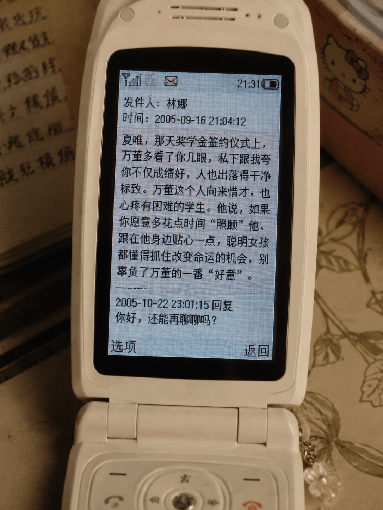
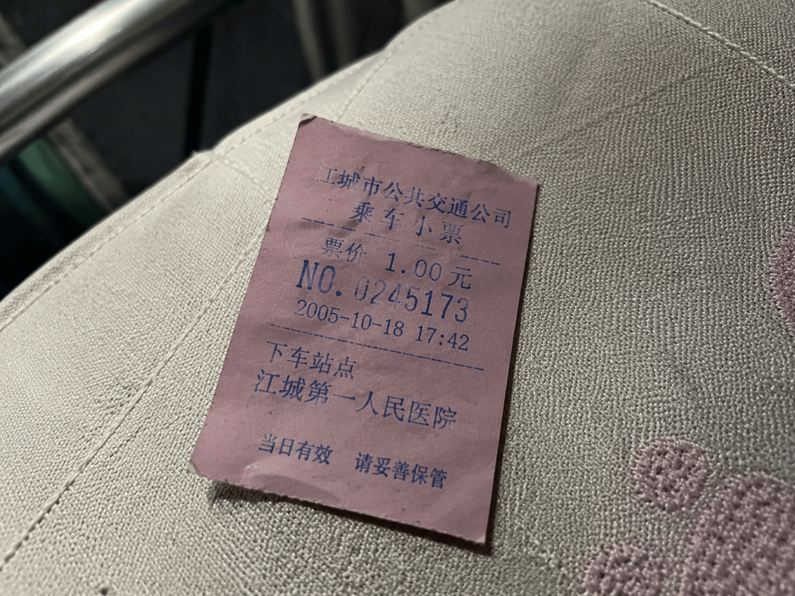

我的文档
e
Internet
Explorer
W
Word 2006
开始
🌐
🔊
15:32
我的文档
X
一起上路吧
瓮中之鱼
安全验证
X
请输入访问密码：
密码错误，请重试。
确定
取消
日记 - Microsoft Word 2006
X
文件(F)
编辑(E)
视图(V)
插入(I)
格式(O)
只要有钟夜在，保送名额永远轮不到我。高考只剩几十天了，我的成绩已经到了极限，凭努力我根本不可能跨越天赋的鸿沟去超越他。万国豪威胁我，如果输了，他就会……我没有时间了，我不能输。既然我已经在万国豪身下变成了一个最脏的人，那我再毁掉一个天才的前途，又有什么区别？钟夜，对不起……
瓮中之鱼
X

手机.png

车票.png
Anael - Microsoft Word 2006
X
文件(F)
编辑(E)
视图(V)
插入(I)
格式(O)
Anael，源自古老希伯来语的温柔名字。 字面之意，即为“神的回答”。 在古老的天使学与星象传说中，他是守护金星的大天使，掌管着世间所有的爱、美、浪漫与艺术灵感。他将天上的光明与深情化为无声的响应，悄悄落入每一个祈求与期盼之中。 那些沉寂在夜晚里的暗自许愿，其实从未被遗忘—— 因为 Anael 这个名字本身，就在轻轻诉说着： “凡你所求，皆有回应；凡你所爱，皆蒙眷顾。”
×